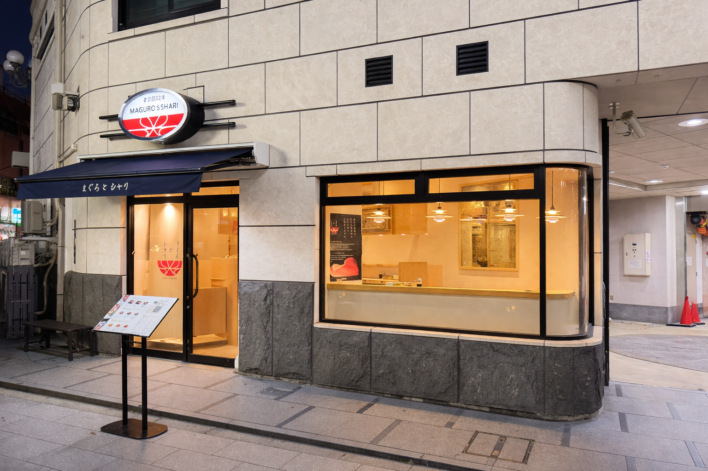

プレミアムまぐろ
まぐろとシャリのこだわりは、プレミアムまぐろから始まります。厳選した天然本まぐろを、仕入れから仕込みまで丁寧に扱っています。
一つひとつの切り身に、品質への一貫した姿勢と素材への敬意を込めています。

洗練された技術
それぞれの丼は、まぐろの個性を軸に構成されています。銀座はっこく、そしてミシュラン星付きシェフ Hiroyuki Sato 氏の指導と着想のもと、旨み、食感、控えめなトッピングの調和を丁寧に整えています。
すべての要素は、過度にならず、まぐろの魅力を引き立てるためにあります。

シャリと味の土台
私たちの土台は、シャリと味付けの調和にあります。新潟県産の希少なコシイブキを使用した特製の赤酢シャリに、丁寧に調整した醤油のベースを合わせています。
その組み合わせが、一杯ごとの輪郭と透明感を支えています。

Asakusa Location
浅草寺からすぐの場所にある浅草店は、11席のみの小さなカウンター専用空間です。
シンプルで集中できる設計の中で、まぐろ丼の質を落ち着いて味わっていただける空間を目指しています。